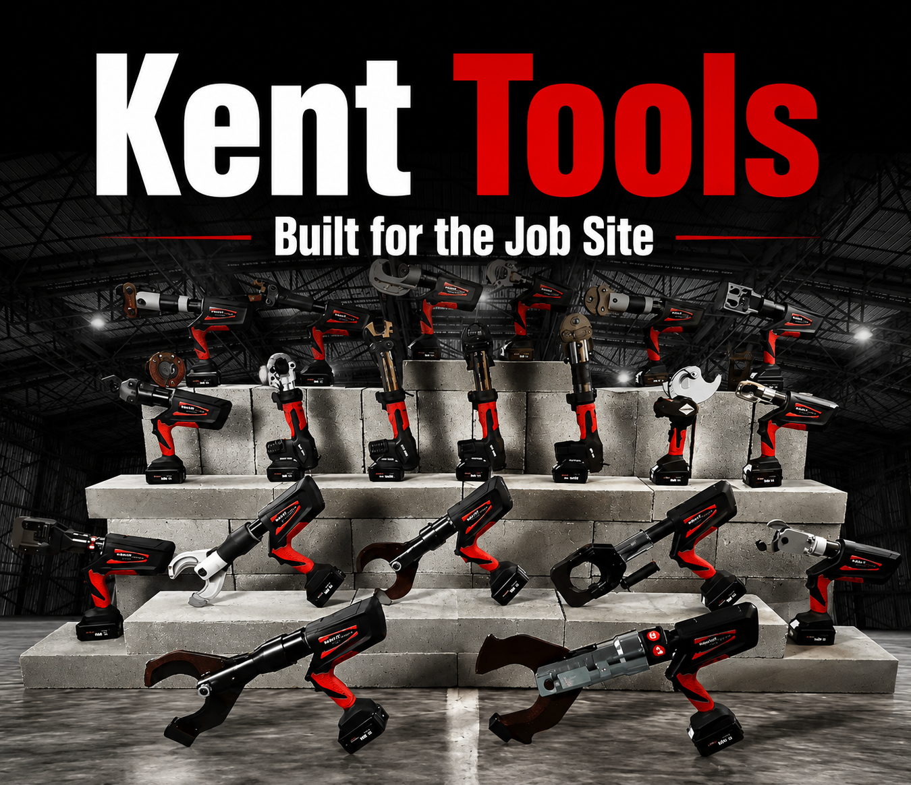
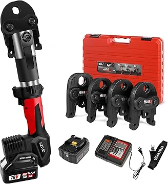
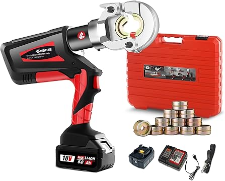
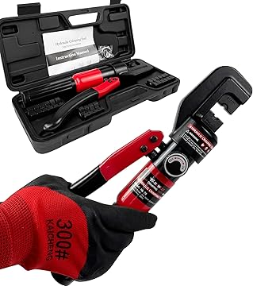

Kent Tools — your reliable partner in crimping equipment. From copper pipe pressing to battery cable crimping and hydraulic solutions — we deliver tools that electricians and plumbers trust. OEM / ODM / wholesale — factory direct pricing, global shipping.

Professionelle Quetschwerkzeuge für Sanitär-, Elektro- und Industrieanwendungen — akkubetrieben und manuell.
Vertraut von Elektrikern, Installateuren und Händlern in über 50 Ländern.

TopAkkubetriebenes Pro Press Werkzeug mit 4 US-Normbacken — 1/2", 3/4", 1", 1-1/4". 100% Kupfermotor liefert 42KN Quetstkraft, fertig einen Pressvorgang in 3-6 Sekunden. Ideal für Sanitär-, Heizungs- und KLIMA-Anwendungen.

BestsellerElektrohydraulisches Quetschwerkzeug mit 12 Matrizen für 8AWG bis 600MCM. 60KN maximale Kraft, OLED-Display, 360° drehbare Backe und LED-Arbeitslicht. 100% Kupfer-Bürstenloser Motor mit automatischer Druckfreigabe.

Verbessertes Hydrauliksystem verhindert Ölverlust — 10TON maximale Quetstkraft mit 9 Paar US-Normmatrizen (12AWG-2/0AWG). Bajonett-Matrizen-Design für stabile Montage, Schnellrücklaufventil. Hochfester Stahl, rostfrei.
Wir verkaufen nicht nur Werkzeuge — wir bauen langfristige Partnerschaften.
ISO 9001:2015 zertifizierte Produktionsstätte mit modernen CNC-Bearbeitungszentren und automatisierten Montagelinien.
Flexible Markenindividualisierung — Ihr Logo, Ihre Farben, Ihre Verpackung.
Standardbestellungen in 15-25 Tagen versandt. Eilbestellungen beschleunigt. Beliebte Modellle auf Lager für sofortigen Versand.
Jede Einheit durchläuft eine 3-stufige Qualitätsprüfung: Eingangsmaterial, In-Prozess und Endprüfung vor dem Versand.
FOB / CIF / DDP — flexible Lieferbedingungen. Zuverlässige Logistik für See-, Luft- und Schienengütertransport weltweit.
Engagierter Account-Manager für jeden Kunden. Technischer Support, Ersatzteile und Kundendienst — immer verfügbar.